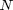
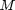
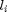
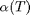
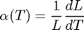
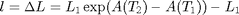
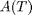
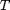

phonon
The phonon class simulates phonon dynamics on a 1D sample structure. Besides the 1D structure it holds various simulation parameters and provides several general helper functions.
Copyright (c) 2013, Daniel Schick, André Bojahr, Marc Herzog, Roman Shayduk, Clemens von Korff Schmising All rights reserved.
License: BSD (use/copy/change/redistribute on own risk, mention the authors)
Contents
Classdef
Each phonon instance and all inherited class objects follow handle semantics. Hence a copy of such object will not copy the object itself, but only a handle to that object.
classdef phonon < simulation
Properties
properties (SetAccess=public,GetAccess=public)
onlyheat = false; % BOOLEAN if true, phonon dynamics are not
% calculated and only heat expansion is
% taken into account
end%properties
Methods
methods
Constructor
Is executed each time an instance of this class is created. Only the structure and forceRecalc inputs are obligatory.
function obj = phonon(structure,forceRecalc,varargin) obj = obj@simulation(structure,forceRecalc,varargin{3:end}); % initialize input parser and define defaults and validators p = inputParser; p.KeepUnmatched = true; p.addOptional('onlyheat', false, @islogical); % parse the input p.parse(varargin{:}); % assign parser results to object properties obj.onlyheat = p.Results.onlyheat; end%function
Display
This method is called to display informations of the instance.
function disp(obj) disp(['only heat : ' bool2str(obj.onlyheat)]); % call the parent display method disp@simulation(obj); end%function
getHash
Returns a unique hash for all heat simulation parameters.
function hash = getHash(obj,time,tempMap,deltaTempMap) % reduce size of tempMap and deltaTempMap when they have more % than 1e6 elements, since dataHash-function will be to slow % otherwise if numel(tempMap) > 1e6 tempMap = reshape(tempMap,1,numel(tempMap)); tempMap = tempMap(1:1e6); deltaTempMap = reshape(deltaTempMap,1,numel(deltaTempMap)); deltaTempMap = deltaTempMap(1:1e6); end%if hash = [obj.S.getHash('phonon') '_' dataHash({time tempMap deltaTempMap obj.onlyheat})]; end%function
getAllStrainsPerUniqueUnitCell
Returns a cell array with all strains per unique unit cell that are given by the input strainMap.
function strains = getAllStrainsPerUniqueUnitCell(obj,strainMap) % get the position indices of all unique unit cells in the % sample structure Pos = obj.S.getAllPositionsPerUniqueUnitCell(); % initalize strains = cell(length(Pos),1); % traverse all unique unitCells for i = 1:length(Pos) temp = strainMap(:,Pos{i}); strains{i} = sort(unique(reshape(temp,numel(temp),1))); end%for end%function
getReducedStrainsPerUniqueUnitCell
Returns a cell array with all strains per unique unit cell that are given by the input strainMap, BUT with a reduced number. The reduction is done by equally spacing the strains between the min and max strain with a given number . can be also a vector of the length() = , where is the number of unique unit cells.
function strains = getReducedStrainsPerUniqueUnitCell(obj,strainMap,N) % if no N is given we use 100 as default if nargin < 3 N = 100; end%if % initialize allStrains = obj.getAllStrainsPerUniqueUnitCell(strainMap); M = length(allStrains); % Nb. of unique unit cells strains = cell(M,1); if length(N) == 1 N = N*ones(M,1); elseif length(N) ~= M error('The dimension of N must be either 1 or the number of unique unit cells in the structure!'); end%if % traverse all unique unitCells for i = 1:length(allStrains) minStrain = min(allStrains{i}); maxStrain = max(allStrains{i}); strains{i} = sort(unique([0 linspace(minStrain,maxStrain,N(i))]))'; end%for end%function
checkTempMaps
Returns the corrected deltaTempMap for the strainMap calculation and checks tempMap and deltaTempMap for the correct dimensions.
function [tempMap, deltaTempMap] = checkTempMaps(obj,tempMap,deltaTempMap,time) N = obj.S.getNumberOfUnitCells; % nb of unit cells M = length(time); % nb of time steps K = obj.S.numSubSystems; % nb of subsystems % check size of deltaTempMap if K == 1 if isequal(size(deltaTempMap),[1 N]) temp = deltaTempMap; deltaTempMap = zeros(M,N); deltaTempMap(1,:) = temp; elseif size(deltaTempMap,1) ~= M || size(deltaTempMap,2) ~= N error('The given temperature difference map does not have the dimension M x N, where M is the number of time steps and N the number of unitCells!'); end%if else if isequal(size(deltaTempMap),[1 N K]) temp = deltaTempMap; deltaTempMap = zeros(M,N,K); deltaTempMap(1,:,:) = temp; elseif size(deltaTempMap,1) ~= M || size(deltaTempMap,2) ~= N || size(deltaTempMap,3) ~= K error('The given temperature difference map does not have the dimension M x N, where M is the number of time steps and N the number of unitCells and K is the number of subsystems!'); end%if end%if if size(tempMap) ~= size(deltaTempMap) error('The temperature map does not have the same size as the temperature difference map!'); end%if end%function
calcSticksFromTempMap
Calculates the sticks to insert into the unit cell springs which model the external force (thermal stress). The length of  of the i-th spacer stick is calculated from the temperature-dependent linear thermal expansion  of the unit cell:

which results after integration in

where  is the integrated lin. therm. expansion coefficient in respect to the temperature . The indices 1 and 2 indicate the initial and final state.
function [sticks, sticksSubSystems] = calcSticksFromTempMap(obj,tempMap,deltaTempMap) N = obj.S.getNumberOfUnitCells; % nb of unit cells K = obj.S.numSubSystems; % nb of subsystems M = size(tempMap,1); % nb of time steps cAxises = obj.S.getUnitCellPropertyVector('cAxis'); intLinThermExps = obj.S.getUnitCellPropertyVector('intLinThermExp'); % integrated linear thermal expansion function intAlphaT0 = zeros(N,K); % evaluated initial integrated linear thermal expansion from T1 to T2 intAlphaT = zeros(N,K); % evaluated integrated linear thermal expansion from T1 to T2 sticks = zeros(M,N); % the sticks inserted in the unit cells sticksSubSystems= zeros(M,N,K); % the sticks for each thermodynamic subsystem % calculate initial integrated linear thermal expansion from T1 to T2 % traverse subsystems for j=1:K intAlphaT0(:,j) = cellfun(@feval,intLinThermExps(:,j),num2cell(squeeze(tempMap(1,:,j))'-squeeze(deltaTempMap(1,:,j))')); end%for % calculate sticks for all subsytsems for all time steps % traverse time for i=1:M if find(deltaTempMap(i,:)) % there is a temperature change % Calculate new sticks from the integrated linear % thermal expansion from initial temperature to % current temperature for each subsystem % traverse subsystems for j=1:K intAlphaT(:,j) = cellfun(@feval,intLinThermExps(:,j),num2cell(squeeze(tempMap(i,:,j))')); end%for % calculate the length of the sticks of each subsystem and sum % them up sticksSubSystems(i,:,:) = repmat(cAxises,1,K) .*exp(intAlphaT-intAlphaT0)-repmat(cAxises,1,K); sticks(i,:) = sum(sticksSubSystems(i,:,:),3)'; else % no temperature change, so keep the current sticks if i > 1 sticksSubSystems(i,:,:) = sticksSubSystems(i-1,:,:); sticks(i,:) = sticks(i-1,:); end%if end%if end%for end%function
end%methods
end%classdef